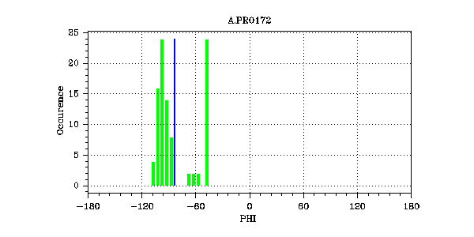
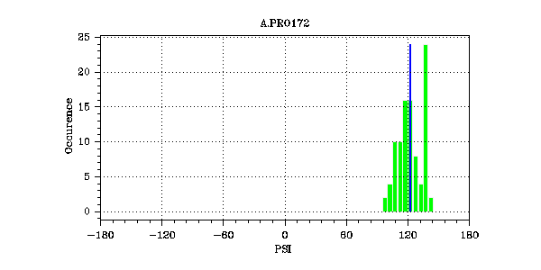
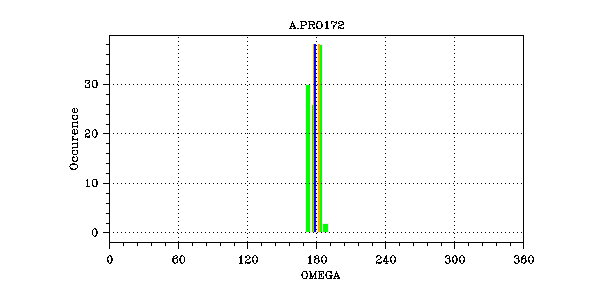

Ramanchandran
PHI
PHI : average: -83.0 cv: 0.074 || outliers:-999 (models -999)
PSI
PSI : average: 122.9 cv: 0.020 || outliers:-999 (models -999)
OMEGA
OMEGA : average: 178.5 cv: 0.003 || outliers:-999 (models -999)
Distance Restraints
distance_constraint_list
70:
(VAL171.HN,
PRO172.QD)
Distance: Lower/Av/Upper: 1.80/ 0.00 / 6.34
Violations: violCount3 / Average / SD / Max: 0 / 0.00 / 0.00 / 0.00
3:
(PRO172.QB,
PRO172.QD)
Distance: Lower/Av/Upper: 1.80/ 2.92 / 6.46
Violations: violCount3 / Average / SD / Max: 0 / 0.00 / 0.00 / 0.00
4:
(PRO172.QG,
PRO172.HA)
Distance: Lower/Av/Upper: 1.80/ 3.39 / 4.71
Violations: violCount3 / Average / SD / Max: 0 / 0.00 / 0.00 / 0.00
68:
(VAL171.HA,
PRO172.QD)
Distance: Lower/Av/Upper: 1.80/ 2.90 / 3.52
Violations: violCount3 / Average / SD / Max: 0 / 0.00 / 0.00 / 0.00
69:
(VAL171.QG1,
PRO172.QD)
(VAL171.QG2,
PRO172.QD)
Distance: Lower/Av/Upper: 1.80/ 3.17 / 7.98
Violations: violCount3 / Average / SD / Max: 0 / 0.00 / 0.00 / 0.00
More:
71
139
140
141
142
143
144
145
distance_constraint_list_1
0:
(VAL171.HA,
PRO172.QD)
Distance: Lower/Av/Upper: 1.80/ 2.90 / 3.52
Violations: violCount3 / Average / SD / Max: 0 / 0.00 / 0.00 / 0.00
1:
(VAL171.QG1,
PRO172.QD)
(VAL171.QG2,
PRO172.QD)
Distance: Lower/Av/Upper: 1.80/ 3.17 / 7.98
Violations: violCount3 / Average / SD / Max: 0 / 0.00 / 0.00 / 0.00
5:
(PRO172.QB,
CYS173.HN)
Distance: Lower/Av/Upper: 1.80/ 3.55 / 5.32
Violations: violCount3 / Average / SD / Max: 0 / 0.00 / 0.00 / 0.00
6:
(PRO172.QB,
SER174.HN)
Distance: Lower/Av/Upper: 1.80/ 3.43 / 5.28
Violations: violCount3 / Average / SD / Max: 0 / 0.00 / 0.00 / 0.00
7:
(PRO172.QB,
THR175.HN)
Distance: Lower/Av/Upper: 1.80/ 3.37 / 5.38
Violations: violCount3 / Average / SD / Max: 0 / 0.00 / 0.00 / 0.00
More:
8
9
10
11
12
Dihedral Restraints
dihedral_constraint_list
15:
OMEGA
Dihedral: Lower/Av/Upper: 178.00/ 178.53 / 182.00
Violations: violCount3 / Average / SD / Max: 32 / -1.20 / 2.55 / 7.41
dihedral_constraint_list_1
15:
OMEGA
Dihedral: Lower/Av/Upper: 178.00/ 178.53 / 182.00
Violations: violCount3 / Average / SD / Max: 32 / -1.20 / 2.55 / 7.41